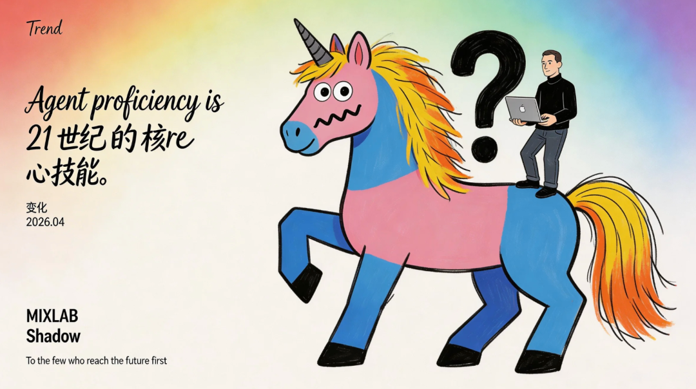

看完 Karpathy 最近的分享，趋势很明显了。用Agent构建你的第二大脑
他说 Agent proficiency 是 21 世纪的核心技能。
我认同。但我想用另一套框架来解读它。
认知健身房：AI 不是拐杖，是杠铃
很多人把 AI 当认知拐杖 —— 懒得想，让 AI 代劳。
错得离谱。
AI 应该是认知健身房。
不是拐杖，是杠铃。
陪练和红队 —— 这是 AI 最被低估的用法。
不知疲倦。顶级。随时挑战你的观点。生成替代方案。推演失败路径。
磨的是判断力，不是记忆力。
练的是认知肌肉，不是信息堆砌。
专家和新手的本质区别在哪里？
不是信息量。是问题分类系统。
面对同一个问题，专家能在0.1秒内定位到关键节点，新手还在信息海洋里挣扎。
AI 能帮你打磨这套分类系统，前提是 —— 你用它挑战自己，而不是替代自己。
Vibe Coding：机长思维
YC 提过 Vibe Coding。
核心思想一句话：你主导决策，AI 负责执行。
翻译成人话：AI 是副驾驶，你是机长。
很多人在副驾驶位置睡着了。
然后怪飞机坠毁。
界面设计师转型 Prompt 设计师，本质不是工具变化，是思维切换。
从「画界面」到「设计交互逻辑」。
从「实现功能」到「调优认知路径」。
这套切换，不会自然发生。
需要刻意练习。
Agent 是可进化的技能包
一个人公司，靠什么跑起来？
Agent 是可组合、可继承、可进化的技能包。
Agent 加数据库，等于知识库。
知识库是产品灵感的重要来源。
你发现没有，这是一条链路：
想象力手册 → 有目的练习 → 与 AI 协作 → 技能内化 → 产品落地
每一个环节都在强化下一个环节。
Agent 协议：RSS 重来？
有人问：Agent 协议会不会像 RSS 一样成为标准化协议？
我不知道答案。
但我知道，每次协议标准化，都会释放一轮红利。
RSS 时代，内容创作者爆发。
Agent 协议时代，谁会爆发？
结语
Agent 不是工具，是21 世纪的元技能。
会用它的人，技能包在膨胀。
不会用它的人，在被替代的倒计时里。
你现在练的，是认知肌肉，还是在找拐杖？